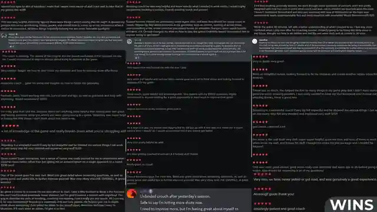

Know Exactly What to Improve Next.
A complete self directed Valorant improvement process for players who already consume guides but still do not have a clear plan.

Stop Collecting Tips. Build a Repeatable Process.
The System is for the player who wants to diagnose, train, review, and adjust without needing constant coaching.
Diagnose. Train. Apply. Review.
Stop trying to fix every part of your game at once.
Match practice to the problem instead of doing random routines.
Turn practice into deliberate in game goals.
Know whether the change worked and what comes next.
Knowing More Is Not the Same as Having a Plan.
You can know crosshair placement, movement, map theory, utility, and mindset and still load into ranked with no idea what you are supposed to improve that day.
A Full Improvement System You Can Use For Years.
Figure out why you are actually losing
Frameworks for mechanics, decisions, awareness, mentality, agents, and maps.
Build focused practice around the problem
Stop doing routines because someone said they were good.
Turn ranked into deliberate reps
Enter games with a purpose instead of hoping volume fixes everything.
Know what to change next
Use the feedback loop again as your rank and problems evolve.
Built From Thousands of Hours of Player Problems.
The System packages the same diagnosis first thinking used across coaching and educational content.

Own the System for $197.
No subscription. Use it whenever your next bottleneck changes.
Your Next Problem Should Not Be a Mystery.
Build a process that tells you what to work on now and what to change when you improve.
Get the System